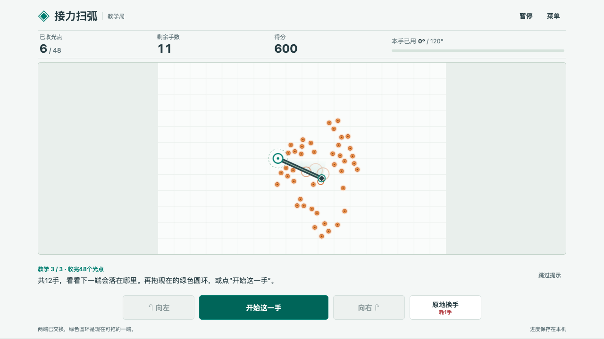
1902 · SweepRelay
接力扫弧
转动扫杆收光点，松手换到另一端。每次停在哪里，都决定下一手从哪里扫。
- 目标
- 12 手收完 48 个光点
- 操作
- 拖动圆环，或用转向按钮
- 设备
- 电脑、手机
开始试玩 →
下载离线版
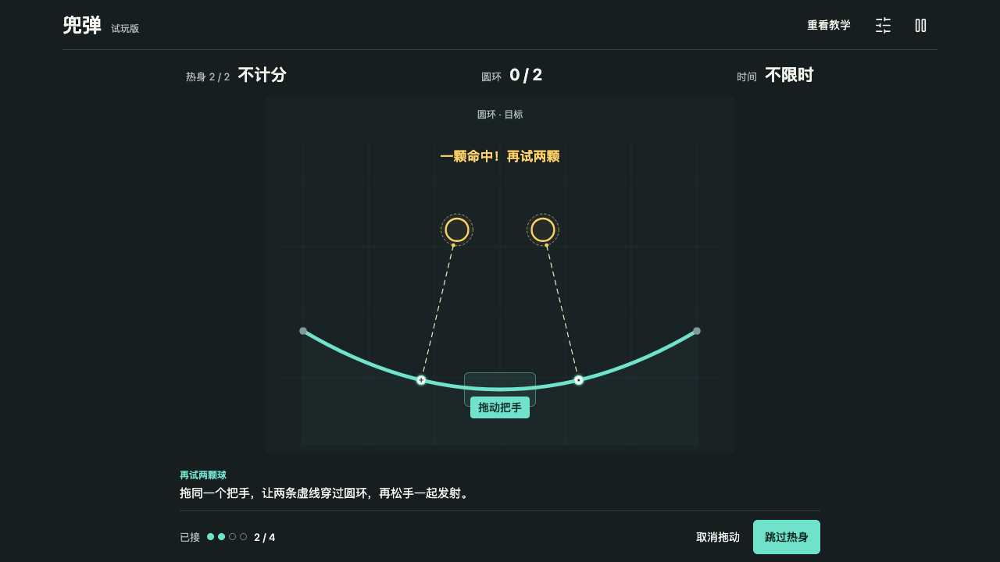
1903 · Curve Volley
兜弹
弹带接住落球，拖动把手改变几条球路，松手一起发射。现在放，还是再接一颗？
- 目标
- 90 秒内点亮圆环，争取一发多中
- 操作
- 拖动把手，松手发射
- 内容
- 热身、标准局、不限时练习
开始试玩 →
下载离线版
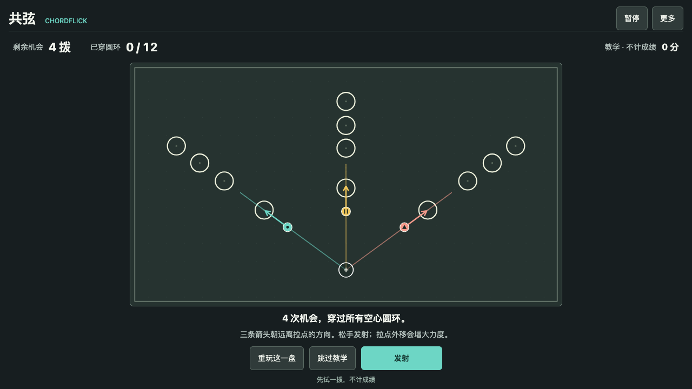
1904 · CHORDFLICK
共弦
一个拉点同时牵动三颗珠。借墙反弹穿过圆环，上一拨留下的位置决定下一拨怎么打。
- 目标
- 4 次机会穿过全部 12 个圆环
- 操作
- 拖动共同拉点，松手发射
- 内容
- 教学、六个固定盘面、同盘重试
开始试玩 →
下载离线版
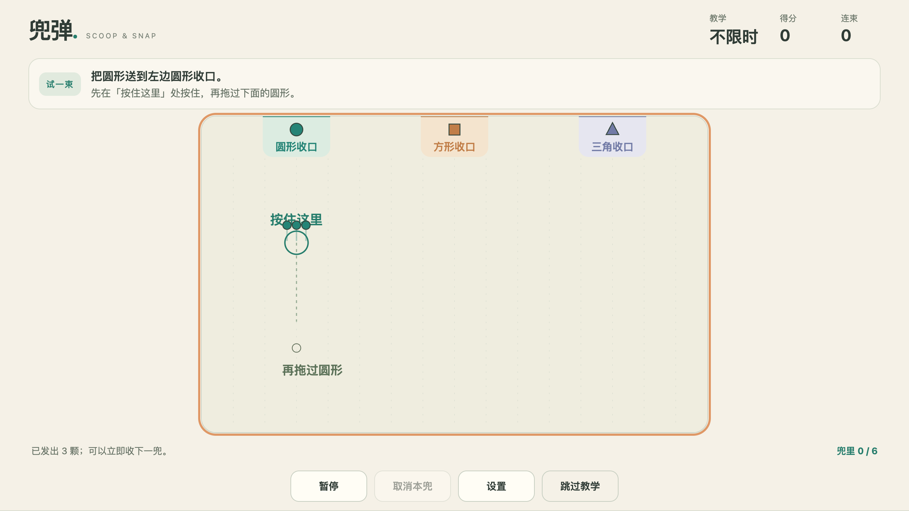
1905 · Scoop & Snap
兜弹
兜住同形粒子，拉紧队形，再把整束送向对应收口。每一颗的位置都影响这一束能否全中。
- 目标
- 90 秒内收集并发射，争取整束全中
- 操作
- 按住立锚，拖过粒子，拉开后松手
- 内容
- 三形收口、六颗容量、教学与自由练习
开始试玩 →
下载离线版
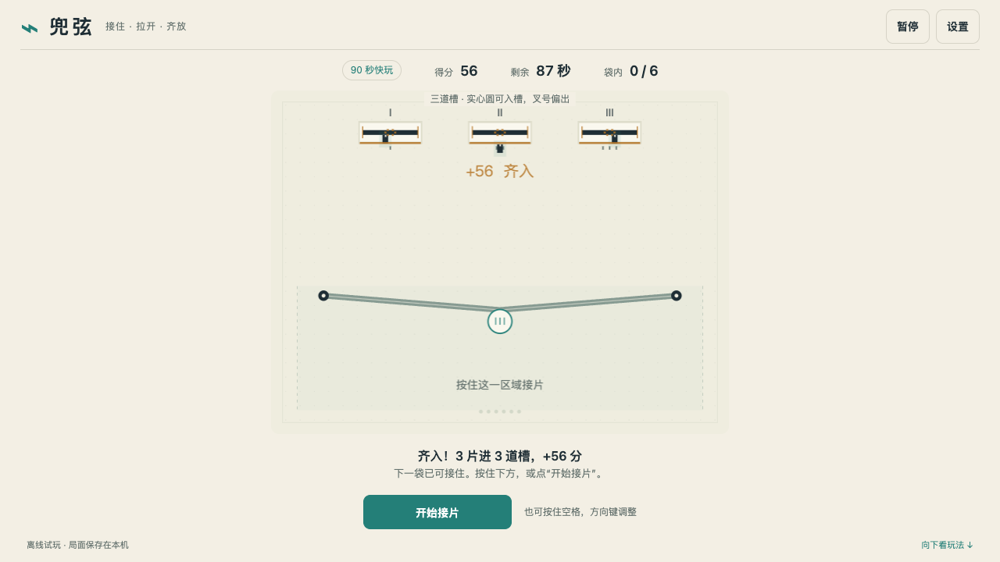
1906 · 接住 · 拉开 · 齐放
兜弦
用两段弦接住落下的光片，移动把手调整整袋落点，再松手齐放进槽。
- 目标
- 90 秒快玩，争取多片齐入
- 操作
- 按住接片，拖动把手，松手发射
- 内容
- 三片教学、六片容量、同来流重试
开始试玩 →
下载离线版
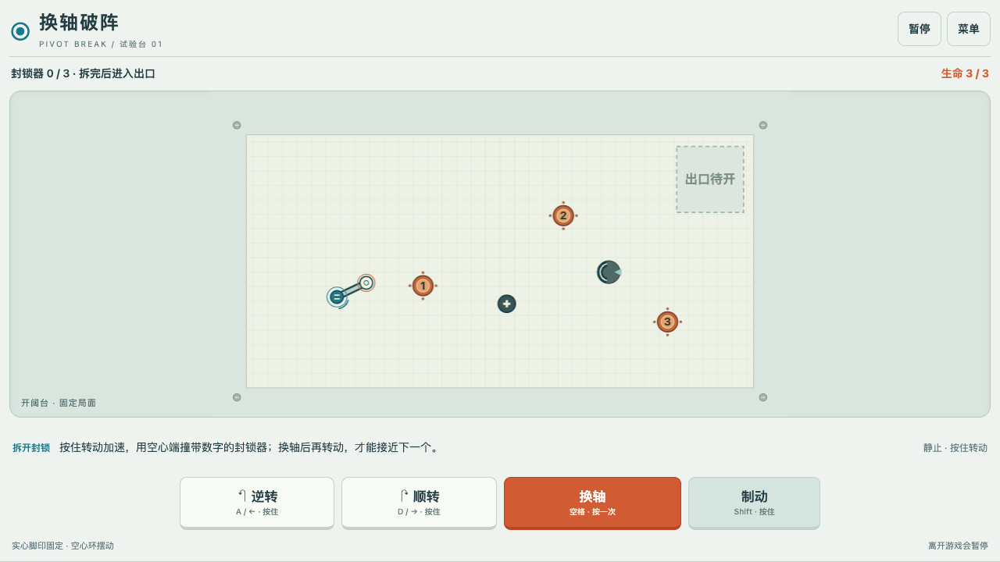
1907 · Pivot Break
换轴破阵
绕固定端摆动长杆，换轴改变立足点。用活动端撞开封锁，再把整根杆送进出口。
- 目标
- 拆掉三个封锁器，再进入出口
- 操作
- 按住转动，空格换轴，Shift 制动
- 内容
- 三段教学、三个固定台面、同台重试
开始试玩 →
下载离线版
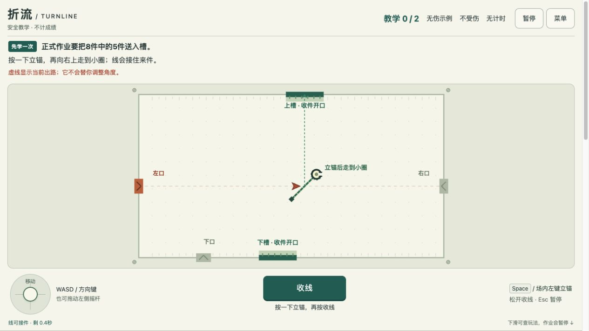
1908 · TURNLINE
折流
立锚后侧移拉出短线，把冲来的物件反射进槽。线只能用一次，出手时机和角度都要刚好。
- 目标
- 8 件来物中至少送入 5 件
- 操作
- 方向键移动，按住空格立锚拉线
- 内容
- 两次教学、三种入口、慢速练习
开始试玩 →
下载离线版
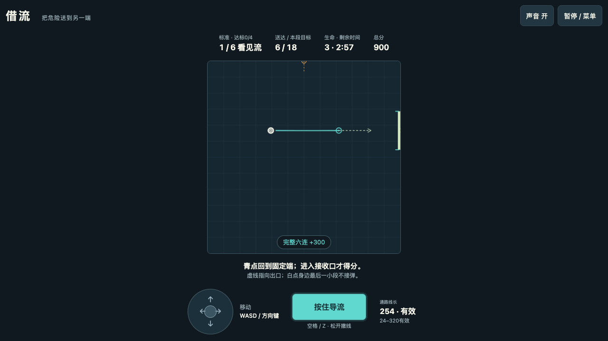
1909 · JL-D0.1
借流
自由立锚拉线，接住圆弹再导向边界出口。只有真正进入收口，才算送达。
- 目标
- 存活 180 秒，完成至少四段配额
- 操作
- 方向键移动，按住空格或 Z 导流
- 内容
- 六段挑战、八种方向、导流教学
开始试玩 →
下载离线版
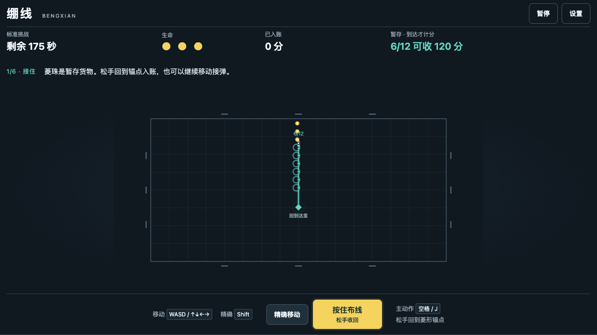
1910 · BENGXIAN
绷线
拉线接住圆弹，把危险变成暂存货物。松手回到锚点才入账，带得越多越要把握回收时机。
- 目标
- 三条生命，挑战 180 秒弹幕
- 操作
- 方向键移动，按住空格或 J 布线
- 内容
- 十二颗容量、三步练习、同局重试
开始试玩 →
下载离线版
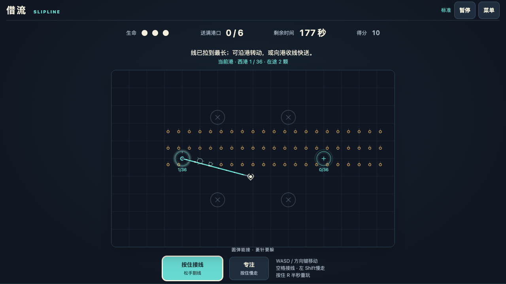
1911 · SLIPLINE
借流
从亮起的港口接线，边移动边把圆弹转成流动的小珠。守住运输路线，将六座港口逐一送满。
- 目标
- 180 秒内送满六港，每港 36 颗
- 操作
- 方向键移动，按住空格接线
- 内容
- 四套固定局面、送达教学、专注移动
开始试玩 →
下载离线版
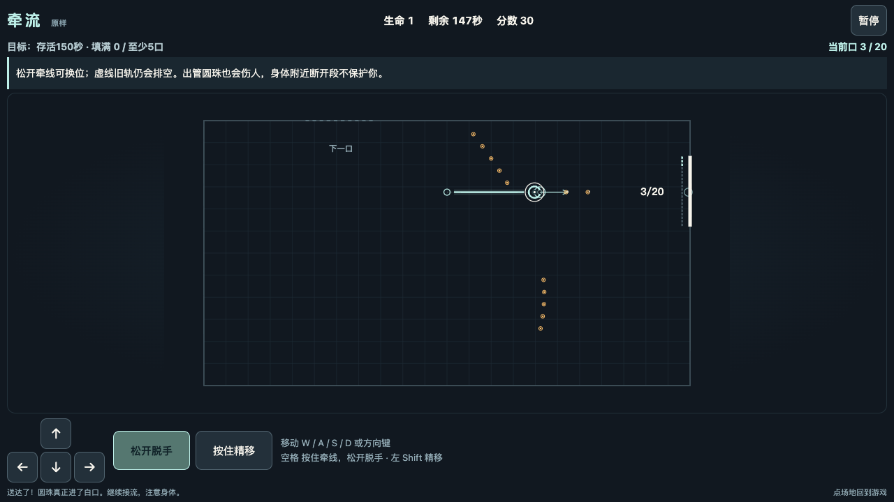
1912 · D0.1
牵流
牵线截住圆珠，再从身体端导向收口。松手留下旧轨排空，边换位边躲开自己放出的圆珠。
- 目标
- 存活 150 秒，填满至少五口
- 操作
- 方向键移动，按住空格牵线
- 内容
- 三步教学、五个阶段、四种镜像
开始试玩 →
下载离线版